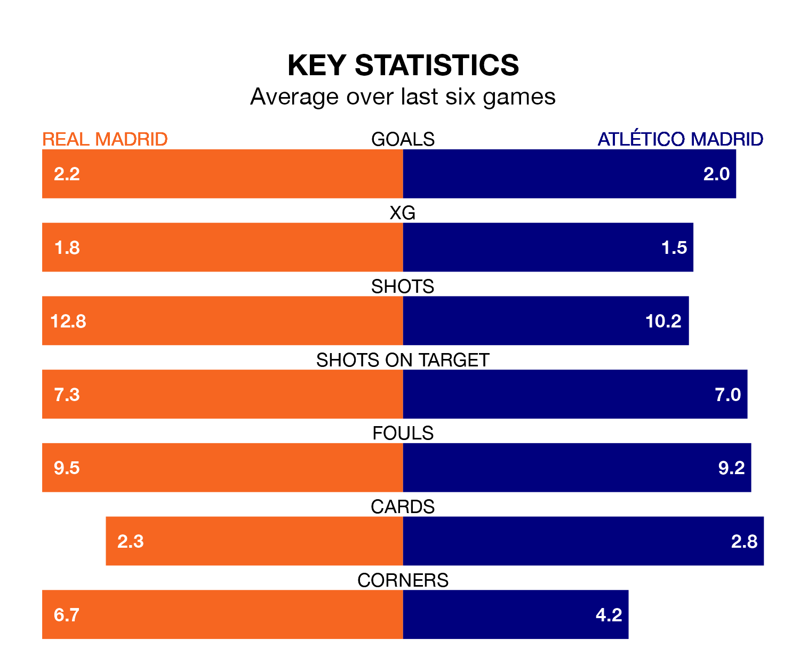

Two of La Liga's top sides face each other at the Estadio Santiago Bernabéu in Sunday's late kick-off, when table-topping Real Madrid host third-placed Atlético Madrid.
Madrid have picked up 18 wins and three draws from 22 games so far this season, and sit 10 points above the visitors going into the 8pm match.
Atlético, meanwhile, have won 15 and drawn two, picking up 47 points.
Madrid are in exceptional form in La Liga, with six wins and no losses from their last six games.
With four wins and a draw over that period, Atlético's form is worse – they have taken 13 points from 18, compared to the home side's 18.
With 47 goals in 22 games so far this season, Madrid are the league's second-highest scorers with 2.1 goals per game. And they are conceding fewer than average, letting in 14 goals at a rate of 0.6 per game.
The visitors are also above average scorers, with 2.0 goals per game, compared to a league average of 1.3. They have conceded 1.1 goals per game.
In Jude Bellingham, Madrid have the league's sharpest shooter so far this season. He has notched 14 goals in 19 appearances.
His goal rate of one every 117 minutes is slightly quicker than that of Alvaro Morata, Atlético's top scorer with a goal every 105 minutes, and a total of 13 goals in 20 games.
In the last 10 years, Madrid and Atlético have played each other on 38 occasions. Madrid won 13 of them, Atlético 11, and they drew 14 times.
On average, Madrid scored 1.4 goals and Atlético 1.3 in those matches.
Their last meeting was on January 18, when Atlético won 4-2 at home.
Madrid's last match was on Thursday, a 2-0 win against Getafe CF, with Joselu getting the goals for Madrid.
Atlético beat Rayo Vallecano 2-1 last time out, on Wednesday, with Memphis Depay and Reinildo Mandava on the scoresheet.
Sunday's match will be refereed by José María Sánchez Martínez, who has taken charge of 11 La Liga games so far this season, issuing three red cards and booking 64 players. He has awarded two penalties.
The last Madrid game Sánchez Martínez refereed was a 5-1 home win against Valencia CF on November 11. His last Atlético match was their 1-0 loss away at FC Barcelona on December 3.
Updated: 15:45 (UTC), 02/02/24